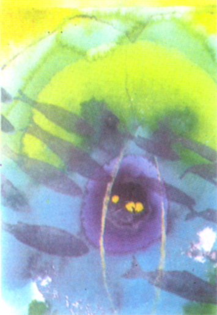

| New Delhi: Suzan Woodruff's Mandala series of paintings on view at Art Konsult Gallery, is a show to ponder over. It is true that these works follow the path of tantra and dyana, the former being a mode of expression and the latter being a process of perception (of the existing reality, that is). But having placed the paintings thus, one could proceed to have a close look at their symbolism and their aesthetic content. Woodruff has used the traditional circle and its center as the manifest energy and the source of energy, respectively. This is the basis of creation - the source of energy is going to manifest itself. Without space there will be no creation, and movement is the inherent quality of life which needs space. In tantrik vocabulary, the source of energy or life is referred to as 'seed', and earth as yoni (the female genital) into which this life force comes and manifests itself. So there is a certain limitation placed on the artist in creating the relevant tantrik images. But apart from the linkage (of the seed and the yoni) there is no check on the artist as to how he expresses this relationship and how far he makes this visual expression aesthetically sound. the choice of the final form, its colour component and its communicability is the artist's own choice and contribution. |

|
| Woodruff has invested considerable mental and emotional energy in these works. She makes the circle, or a progression of several concentric circles, a thing of beauty wherein colours add an emotional dimension to the form. There is vibrancy as well as emotional warmth in these acrylics which touches us both on the emotional as well as intellectual planes. And its a process. First the form engages us through its aesthetic charm, then the detail pitches in to convey the meaning and one is beguiled by the subtlety of the final image. Woodruff leaves her images at this point. She does not want to feed the viewer with the last detail. The viewer must first drink in its aesthetic content and then proceed to create his or her own image of what has been so aptly described or expressed in these works. Looking for meaning here is irrelevant. What is relevant is how these images relate to both the viewer as well as the philosophy behind them. In the Meditation series Woodruff depicts the way to the higher planes of thought. Pyramid like forms (yellow or white) indicate that the apex point is an attainable objective. Or that through dyana (meditation) energy could be directed towards the base for its enrichment and strength. This two way process - energy converting into matter and matter rising up to become pure (thought) energy is a fascinating aspect of Zen Buddhism and Trantric philosophy. That Woodruff has lived this philosophy through the creative process is an achievement. And certainly, this experience is more aesthetic than intellectual. |
|